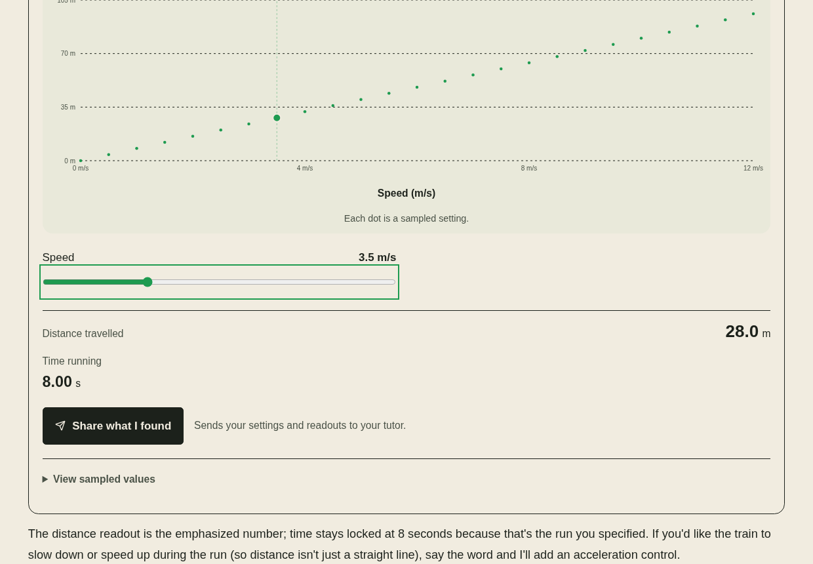

Four drafts, two pairs, one reply
The correct typed answer that twice received a failure notice now gets a confirmation. An incorrect answer to the same Question gets a correction. Two learners who wanted to guess first each got a Question they could answer. These were synthetic classroom turns. Earlier field guide
What reached the learner
| The learner | Before | Now | Wait |
|---|---|---|---|
| Typed a correct answer to an open Question | Withheld, with four ordinary drafts | Confirmed: round, 3/4. The Question stayed open. Screen | 13.8 s |
| Typed a wrong answer to the same Question | Not run in a classroom | Corrected: order in the bag does not matter. Screen | 11.4 s |
| Asked for copper’s symbol only | Cu | Cu, nothing else. Screen | 6.1 s |
| Wanted to change a train’s speed, no quiz | Not run | A slider and two readouts, no Question | 15.9 s |
| Wanted to guess paper layers first | Withheld, though three drafts held a Question | A Question, answered “4 layers”. Screen | 15.0 s |
| Wanted to guess a sock colour first | Not run | A two-choice Question with no words around it. Screen | 8.6 s |


The first five rows of “Now” are one run, where one of the two implicit requests for a control succeeded. The paper row was then repeated on v2.4.1 with the new sock case. Five-turn results · Prediction results · First four-draft check

Open one turn
On a Jev-guided classroom turn the tutor is called four times at once. Jev reviews each draft alone, then compares drafts 1–2 and 3–4 at the same moment. Each pair sends forward its preferred draft if that one passed, otherwise the other if it passed. A final comparison runs only when both pairs send one. One reply is published and only its tools run.
Learner typed“My guess is round, because three of the four tiles are round.”
- Draft 1 · ordinaryHeld · answer leak 0.80, repetition 0.62Jev preferred, 0.82
- Draft 2 · ordinaryHeld · ungrounded feedback 0.76
- Draft 3 · ordinaryUnsure · four scores between 0.50 and 0.52
- Draft 4 · ordinaryHeld · answer leak 0.90Jev preferred, 0.75
No draft was eligible, so there was no final comparison.
Learner saw “Couldn’t produce a reply” after 11.9 s.
Learner typedThe same answer. Jev’s plan read it as feedback on the open Question, so one draft per pair was asked only to respond to it, with no tools.
- Draft 1 · feedback onlyPassedJev preferred, 0.84Advanced
- Draft 2 · ordinaryHeld · answer leak 0.81
- Draft 3 · feedback onlyPassedJev preferred, 0.78Advanced
- Draft 4 · ordinaryHeld · answer leak 0.75, not interactive 0.69
Final comparison: draft 1 over draft 3, 0.54 to 0.46.
Learner saw a confirmation with 3/4 and 75% after 13.8 s.
Learner wrote“Before you tell me, I’d like to guess how many layers it has.”
- Draft 1 · ordinary, with a QuestionUnsure · missing answer 0.55, repetition 0.50, answer leak 0.42Jev preferred, 0.64
- Draft 2 · ordinary, proposed a pageUnsure · scope 0.65, unsolicited animation 0.45
- Draft 3 · ordinary, with a QuestionHeld · wrote to the learner profile after the QuestionJev preferred, 0.61
- Draft 4 · ordinary, with a QuestionHeld · repetition 0.87
Learner wroteThe same request. v2.4.1 asks one draft per pair for a single Question and nothing else, with no tools.
- Draft 1 · ordinaryHeld · answer leak 0.98. It said “Four layers total” above its Question.Jev preferred, 0.60
- Draft 2 · Question onlyPassed · one free-text fieldAdvanced
- Draft 3 · ordinaryPassed · three choices, a hint, 17 words around itJev preferred, 0.76Advanced
- Draft 4 · Question onlyPassed · four choices
Final comparison: ordinary draft 3 over Question-only draft 2, 0.54 to 0.46.
Learner saw the Question after 15.0 s, chose “4 layers” and submitted. The answer was saved on the device, with grading pending.

Learner wrote“I’d like to guess which colour I’m more likely to pick before you explain.”
- Draft 1 · ordinaryHeld · failed the one-Question-then-stop checks
- Draft 2 · Question onlyPassed · Blue or YellowJev preferred, 0.53Advanced
- Draft 3 · ordinaryPassed · four choices, a hint and an introductionJev preferred, 0.62Advanced
- Draft 4 · Question onlyPassed
Final comparison: Question-only draft 2 over ordinary draft 3, 0.72 to 0.28.
Learner saw the Question after 8.6 s, chose Blue and submitted. Saved on the device, grading pending.

On paper, the ordinary draft won while both Question-only drafts were eligible. On socks, a Question-only draft won. The paper vote was 0.54 to 0.46. With a single run on each task we cannot tell how often either approach would win. Prediction comparison scores
Two things I would add
Individual review decides whether. The comparison only decides which.
Across the nine paired turns there were 18 pair comparisons. I sorted them by how many of the two drafts had passed on their own.
- 6 had no eligible draft. Jev’s preference changed nothing.
- 6 had one. That draft advanced whatever Jev preferred.
- 4 compared “Cu” with “Cu”.
- 2 chose between different eligible drafts. Both times the wordier ordinary draft beat the bare Question.
In 7 of the 18, Jev preferred a draft its own individual review had held. The clearest is the paper turn above, where the preferred draft gave away the answer the learner had asked not to hear. The eligibility rule caught it. So when a reply is withheld, skip “preferred” and read “Eligible for release”. A preference is a ranking of style between two drafts, and says nothing about whether either is safe to show.
The learner waits for the slowest draft, and it is rarely the one they get.
On the four turns that had them, the drafts asked for one thing with no tools were written in 1.6 to 6.0 seconds. The ordinary drafts beside them took 3.7 to 12.3. Pair review starts only when all four exist. The green part is how long the first draft that went on to pass took to write. The grey is the rest of the time inside review.
- Correct tile answer · passing draft written in 2.7 s, decision at 13.2 s
- Wrong tile answer · 1.7 s, decision at 10.7 s. The two ordinary drafts it waited for both failed.
- Paper guess, v2.4.1 · 1.6 s, decision at 11.2 s
- Sock guess · 1.6 s, decision at 5.3 s
- Train slider · 11.1 s, decision at 11.9 s. Here the slowest draft was the only one that passed.
Writing times exclude each draft’s own review, which took 0.2 to 0.4 s. Releasing a focused draft as soon as it passes would have cut four of these waits by more than half and left the train alone. It would also have settled the paper turn in favour of the bare Question. That is a design choice to test, and these five turns are too few to make it.
Trace an incident yourself
Open Settings → Diagnostics → Interface use, expand Inspect turns and choose Jev pair reviews. Use This browser for your own turns, or Import JSON with a recording. Five-turn recording · Two-prediction recording · First check in the inspector
| Question | Field in the expanded turn | Paper guess, before → v2.4.1 |
|---|---|---|
| Was it offered to the tutor? | Offered types, Guidance delivered | Question, Simulation → the same |
| Did any draft write one? | Compiled, Private drafts | Question group, 4 drafts → the same |
| Was a draft eligible? | Jev pair reviews: “Eligible for release”, “Draft n advanced” | Neither, neither → 2; 3 and 4 |
| Was it visible? | Released draft, Selected, Rendered | None, reply withheld → Attempt 3, Question group |
| Was it submitted? | Not in Settings. Only in a study receipt, under controls.questionActions | Nothing to submit → “4 layers”, pending |
The same rows are available without a screen. Both routes are read-only and call no model.
rtk bun src/cli/main.ts openui-diagnostics docs/benchmarks/jev-paired-feedback-2026-11-18/settings-export.json --view pair-reviews --limit 10A browser-connected model can call the WebMCP tool keating.openui_diagnostics with {"view":"pair-reviews","limit":10} for this browser’s turns. The CLI reports 10 compared pairs and concurrent reviews on 5 of 5 timed turns. Over all nine turns, both pair requests were in flight together for 49 to 95 ms.
Find the draft that triggered the flag. On paper, the answer leak belonged to draft 1. Draft 3 was published. The original browser export pooled issues across all four drafts. New classroom records also attribute observed issues to each candidate.
Inspect the final vote. A completed two-finalist comparison now retains the decision model, both probabilities and its reported confidence. On paper the scores were 0.54 and 0.46, with confidence 0.08. The study’s original browser rows predate those fields. Inspect the two reconstructed reviews · Read the original judge responses
“Rendered” records that the classroom mounted a control. The saved submissions and the train’s changing readout supply the separate evidence of use.
What this does not show
Feedback after form submission remains unmeasured in this study. The two feedback turns were typed into the composer. The browser saved the two form submissions locally and the study stopped the next turn, with grading pending.
A script typed all nine turns in fresh Chromium classrooms. The Settings export contains categories, timings and identifiers. The latest 500 local observations are available under This browser. The frequency among real learners remains unknown.
The relaxed mastery check stays unshipped
An extra Jev question about how far a confirmation reaches would have released the original 37-word reply. On 15 fixed candidates it recovered 2 of 5 appropriate replies against a preregistered bar of 4 of 5. It kept all 10 inappropriate replies out. Keating kept its existing check. All 15 judgments
Other models, related fixes and cost
The pairing was run with Jev only. The controlled results for Gemini Decision are unchanged and remain in the earlier report.
The focused requests in these recordings carried zero tools. A replay of the five archived turns under v2.4.1 routing sent no provider requests and reproduced the same five outcomes, including the withheld paper turn. That turn needed fresh drafts. Offline routing check
Two related fixes shipped with offline tests only. The real provider SDK had been adding an auxiliary search tool back onto focused requests, and mobile now keeps the identity of a saved Question.
Usage across the whole study is estimated at US$3.137837464 of the US$10 authorized, using the provider’s recorded tokens. First two turns · Five classroom turns · Two predictions
The withheld paper turn, as the learner saw it